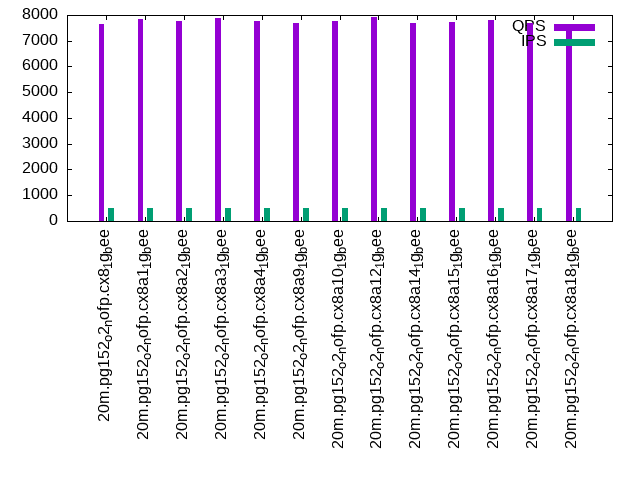

This is a report for the insert benchmark with 20M docs and 1 client(s). It is generated by scripts (bash, awk, sed) and Tufte might not be impressed. An overview of the insert benchmark is here and a short update is here. Below, by DBMS, I mean DBMS+version.config. An example is my8020.c10b40 where my means MySQL, 8020 is version 8.0.20 and c10b40 is the name for the configuration file.
The test server has 8 AMD cores, 16G RAM and an NVMe SSD. It is described here as the Beelink. The benchmark was run with 1 client and there were 1 or 3 connections per client (1 for queries or inserts without rate limits, 1+1 for rate limited inserts+deletes). It uses 1 table. It loads 20M rows per table without secondary indexes, creates secondary indexes, then inserts 50M rows per table with a delete per insert to avoid growing the table. It then does 3 read+write tests for 1800s each that do queries as fast as possible with 100, 500 and then 1000 inserts/second/client concurrent with the queries and 1000 deletes/second to avoid growing the table. The database is cached by the OS page cache but not by the storage engine. Clients and the DBMS share one server. The per-database configs are in the per-database subdirectories here.
The tested DBMS are:
The numbers are inserts/s for l.i0 and l.i1, indexed docs (or rows) /s for l.x and queries/s for q*.2. The values are the average rate over the entire test for inserts (IPS) and queries (QPS). The range of values for IPS and QPS is split into 3 parts: bottom 25%, middle 50%, top 25%. Values in the bottom 25% have a red background, values in the top 25% have a green background and values in the middle have no color. A gray background is used for values that can be ignored because the DBMS did not sustain the target insert rate. Red backgrounds are not used when the minimum value is within 80% of the max value.
| dbms | l.i0 | l.x | l.i1 | q100.1 | q500.1 | q1000.1 |
|---|---|---|---|---|---|---|
| 20m.pg152_o2_nofp.cx8_1g_bee | 72727 | 233721 | 9897 | 7803 | 7668 | 7588 |
| 20m.pg152_o2_nofp.cx8a1_1g_bee | 73260 | 231034 | 10091 | 7900 | 7859 | 7803 |
| 20m.pg152_o2_nofp.cx8a2_1g_bee | 72993 | 233721 | 9432 | 7720 | 7763 | 7617 |
| 20m.pg152_o2_nofp.cx8a3_1g_bee | 72464 | 231034 | 9996 | 7947 | 7884 | 7762 |
| 20m.pg152_o2_nofp.cx8a4_1g_bee | 73260 | 233721 | 10339 | 7863 | 7774 | 7580 |
| 20m.pg152_o2_nofp.cx8a9_1g_bee | 72464 | 233721 | 10410 | 7912 | 7671 | 7614 |
| 20m.pg152_o2_nofp.cx8a10_1g_bee | 72993 | 233721 | 10333 | 7874 | 7777 | 7562 |
| 20m.pg152_o2_nofp.cx8a12_1g_bee | 73260 | 239286 | 10202 | 7854 | 7919 | 7844 |
| 20m.pg152_o2_nofp.cx8a14_1g_bee | 72464 | 233721 | 9535 | 7760 | 7692 | 7546 |
| 20m.pg152_o2_nofp.cx8a15_1g_bee | 73529 | 233721 | 10204 | 7778 | 7732 | 7599 |
| 20m.pg152_o2_nofp.cx8a16_1g_bee | 72202 | 231034 | 17036 | 7901 | 7791 | 7788 |
| 20m.pg152_o2_nofp.cx8a17_1g_bee | 72464 | 233721 | 9042 | 8015 | 7689 | 7800 |
| 20m.pg152_o2_nofp.cx8a18_1g_bee | 72727 | 239286 | 16900 | 7761 | 7637 | 7798 |
This table has relative throughput, throughput for the DBMS relative to the DBMS in the first line, using the absolute throughput from the previous table.
| dbms | l.i0 | l.x | l.i1 | q100.1 | q500.1 | q1000.1 |
|---|---|---|---|---|---|---|
| 20m.pg152_o2_nofp.cx8_1g_bee | 1.00 | 1.00 | 1.00 | 1.00 | 1.00 | 1.00 |
| 20m.pg152_o2_nofp.cx8a1_1g_bee | 1.01 | 0.99 | 1.02 | 1.01 | 1.02 | 1.03 |
| 20m.pg152_o2_nofp.cx8a2_1g_bee | 1.00 | 1.00 | 0.95 | 0.99 | 1.01 | 1.00 |
| 20m.pg152_o2_nofp.cx8a3_1g_bee | 1.00 | 0.99 | 1.01 | 1.02 | 1.03 | 1.02 |
| 20m.pg152_o2_nofp.cx8a4_1g_bee | 1.01 | 1.00 | 1.04 | 1.01 | 1.01 | 1.00 |
| 20m.pg152_o2_nofp.cx8a9_1g_bee | 1.00 | 1.00 | 1.05 | 1.01 | 1.00 | 1.00 |
| 20m.pg152_o2_nofp.cx8a10_1g_bee | 1.00 | 1.00 | 1.04 | 1.01 | 1.01 | 1.00 |
| 20m.pg152_o2_nofp.cx8a12_1g_bee | 1.01 | 1.02 | 1.03 | 1.01 | 1.03 | 1.03 |
| 20m.pg152_o2_nofp.cx8a14_1g_bee | 1.00 | 1.00 | 0.96 | 0.99 | 1.00 | 0.99 |
| 20m.pg152_o2_nofp.cx8a15_1g_bee | 1.01 | 1.00 | 1.03 | 1.00 | 1.01 | 1.00 |
| 20m.pg152_o2_nofp.cx8a16_1g_bee | 0.99 | 0.99 | 1.72 | 1.01 | 1.02 | 1.03 |
| 20m.pg152_o2_nofp.cx8a17_1g_bee | 1.00 | 1.00 | 0.91 | 1.03 | 1.00 | 1.03 |
| 20m.pg152_o2_nofp.cx8a18_1g_bee | 1.00 | 1.02 | 1.71 | 0.99 | 1.00 | 1.03 |
This lists the average rate of inserts/s for the tests that do inserts concurrent with queries. For such tests the query rate is listed in the table above. The read+write tests are setup so that the insert rate should match the target rate every second. Cells that are not at least 95% of the target have a red background to indicate a failure to satisfy the target.
| dbms | q100.1 | q500.1 | q1000.1 |
|---|---|---|---|
| pg152_o2_nofp.cx8_1g_bee | 100 | 499 | 998 |
| pg152_o2_nofp.cx8a1_1g_bee | 100 | 499 | 998 |
| pg152_o2_nofp.cx8a2_1g_bee | 100 | 499 | 998 |
| pg152_o2_nofp.cx8a3_1g_bee | 100 | 499 | 998 |
| pg152_o2_nofp.cx8a4_1g_bee | 100 | 499 | 998 |
| pg152_o2_nofp.cx8a9_1g_bee | 100 | 499 | 998 |
| pg152_o2_nofp.cx8a10_1g_bee | 100 | 499 | 998 |
| pg152_o2_nofp.cx8a12_1g_bee | 100 | 499 | 998 |
| pg152_o2_nofp.cx8a14_1g_bee | 100 | 499 | 998 |
| pg152_o2_nofp.cx8a15_1g_bee | 100 | 499 | 998 |
| pg152_o2_nofp.cx8a16_1g_bee | 100 | 499 | 998 |
| pg152_o2_nofp.cx8a17_1g_bee | 100 | 499 | 998 |
| pg152_o2_nofp.cx8a18_1g_bee | 100 | 499 | 998 |
| target | 100 | 500 | 1000 |
l.i0: load without secondary indexes. Graphs for performance per 1-second interval are here.
Average throughput:
Insert response time histogram: each cell has the percentage of responses that take <= the time in the header and max is the max response time in seconds. For the max column values in the top 25% of the range have a red background and in the bottom 25% of the range have a green background. The red background is not used when the min value is within 80% of the max value.
| dbms | 256us | 1ms | 4ms | 16ms | 64ms | 256ms | 1s | 4s | 16s | gt | max |
|---|---|---|---|---|---|---|---|---|---|---|---|
| pg152_o2_nofp.cx8_1g_bee | 99.997 | 0.003 | 0.005 | ||||||||
| pg152_o2_nofp.cx8a1_1g_bee | 99.997 | 0.003 | 0.005 | ||||||||
| pg152_o2_nofp.cx8a2_1g_bee | 99.997 | 0.003 | 0.004 | ||||||||
| pg152_o2_nofp.cx8a3_1g_bee | 99.997 | 0.003 | 0.005 | ||||||||
| pg152_o2_nofp.cx8a4_1g_bee | 99.997 | 0.003 | 0.005 | ||||||||
| pg152_o2_nofp.cx8a9_1g_bee | 99.997 | 0.003 | 0.005 | ||||||||
| pg152_o2_nofp.cx8a10_1g_bee | 99.997 | 0.003 | 0.004 | ||||||||
| pg152_o2_nofp.cx8a12_1g_bee | 99.997 | 0.003 | 0.004 | ||||||||
| pg152_o2_nofp.cx8a14_1g_bee | 99.997 | 0.003 | 0.005 | ||||||||
| pg152_o2_nofp.cx8a15_1g_bee | 99.997 | 0.003 | 0.005 | ||||||||
| pg152_o2_nofp.cx8a16_1g_bee | 99.997 | 0.003 | 0.005 | ||||||||
| pg152_o2_nofp.cx8a17_1g_bee | 99.998 | 0.002 | 0.004 | ||||||||
| pg152_o2_nofp.cx8a18_1g_bee | 99.997 | 0.003 | 0.005 |
Performance metrics for the DBMS listed above. Some are normalized by throughput, others are not. Legend for results is here.
ips qps rps rmbps wps wmbps rpq rkbpq wpi wkbpi csps cpups cspq cpupq dbgb1 dbgb2 rss maxop p50 p99 tag 72727 0 0 0.0 259.3 34.6 0.000 0.000 0.004 0.488 8984 23.4 0.124 26 1.9 5.2 0.0 0.005 73053 70615 20m.pg152_o2_nofp.cx8_1g_bee 73260 0 0 0.0 241.0 34.8 0.000 0.000 0.003 0.487 9008 23.4 0.123 26 1.9 5.2 0.0 0.005 73283 69520 20m.pg152_o2_nofp.cx8a1_1g_bee 72993 0 0 0.0 265.0 34.7 0.000 0.000 0.004 0.487 8970 23.1 0.123 25 1.9 5.2 0.0 0.004 73217 70016 20m.pg152_o2_nofp.cx8a2_1g_bee 72464 0 0 0.0 272.2 34.3 0.000 0.000 0.004 0.485 8928 23.3 0.123 26 1.9 5.2 0.0 0.005 72717 69716 20m.pg152_o2_nofp.cx8a3_1g_bee 73260 0 0 0.0 241.9 34.7 0.000 0.000 0.003 0.485 8994 23.3 0.123 25 1.9 5.2 0.0 0.005 73216 71416 20m.pg152_o2_nofp.cx8a4_1g_bee 72464 0 0 0.0 271.2 34.3 0.000 0.000 0.004 0.485 8919 23.3 0.123 26 1.9 5.2 0.0 0.005 72617 69817 20m.pg152_o2_nofp.cx8a9_1g_bee 72993 0 0 0.0 272.7 34.6 0.000 0.000 0.004 0.486 8977 23.1 0.123 25 1.9 5.2 0.0 0.004 72920 70416 20m.pg152_o2_nofp.cx8a10_1g_bee 73260 0 0 0.0 267.1 34.9 0.000 0.000 0.004 0.488 9043 23.3 0.123 25 1.9 5.2 0.0 0.004 73617 70216 20m.pg152_o2_nofp.cx8a12_1g_bee 72464 0 0 0.0 278.2 34.3 0.000 0.000 0.004 0.485 8952 23.2 0.124 26 1.9 5.2 0.0 0.005 72750 69721 20m.pg152_o2_nofp.cx8a14_1g_bee 73529 0 0 0.0 236.7 34.7 0.000 0.000 0.003 0.483 9027 23.4 0.123 25 1.9 5.2 0.0 0.005 73517 70141 20m.pg152_o2_nofp.cx8a15_1g_bee 72202 0 0 0.0 288.4 34.3 0.000 0.000 0.004 0.487 8945 23.3 0.124 26 1.9 5.2 0.0 0.005 72618 69616 20m.pg152_o2_nofp.cx8a16_1g_bee 72464 0 0 0.0 272.6 34.3 0.000 0.000 0.004 0.485 8941 23.3 0.123 26 1.9 5.2 0.0 0.004 72818 69618 20m.pg152_o2_nofp.cx8a17_1g_bee 72727 0 0 0.0 271.9 34.5 0.000 0.000 0.004 0.485 8970 23.2 0.123 26 1.9 5.2 0.0 0.005 72919 68821 20m.pg152_o2_nofp.cx8a18_1g_bee
l.x: create secondary indexes.
Average throughput:
Performance metrics for the DBMS listed above. Some are normalized by throughput, others are not. Legend for results is here.
ips qps rps rmbps wps wmbps rpq rkbpq wpi wkbpi csps cpups cspq cpupq dbgb1 dbgb2 rss maxop p50 p99 tag 233721 0 0 0.0 126.8 54.3 0.000 0.000 0.001 0.238 740 12.1 0.003 4 3.7 8.6 0.0 0.003 NA NA 20m.pg152_o2_nofp.cx8_1g_bee 231034 0 0 0.0 77.9 36.0 0.000 0.000 0.000 0.160 716 12.3 0.003 4 3.7 8.0 0.0 0.003 NA NA 20m.pg152_o2_nofp.cx8a1_1g_bee 233721 0 0 0.0 118.2 53.0 0.000 0.000 0.001 0.232 705 11.9 0.003 4 3.7 8.6 0.0 0.003 NA NA 20m.pg152_o2_nofp.cx8a2_1g_bee 231034 0 0 0.0 121.4 52.7 0.000 0.000 0.001 0.233 665 12.2 0.003 4 3.7 8.6 0.0 0.003 NA NA 20m.pg152_o2_nofp.cx8a3_1g_bee 233721 0 0 0.0 117.8 53.6 0.000 0.000 0.001 0.235 693 12.1 0.003 4 3.7 8.6 0.0 0.003 NA NA 20m.pg152_o2_nofp.cx8a4_1g_bee 233721 0 0 0.0 119.1 54.0 0.000 0.000 0.001 0.237 693 12.1 0.003 4 3.7 8.6 0.0 0.003 NA NA 20m.pg152_o2_nofp.cx8a9_1g_bee 233721 0 0 0.0 119.9 53.8 0.000 0.000 0.001 0.236 729 12.3 0.003 4 3.7 8.6 0.0 0.004 NA NA 20m.pg152_o2_nofp.cx8a10_1g_bee 239286 0 0 0.0 99.4 44.7 0.000 0.000 0.000 0.191 767 12.5 0.003 4 3.7 8.6 0.0 0.003 NA NA 20m.pg152_o2_nofp.cx8a12_1g_bee 233721 0 0 0.0 119.6 53.1 0.000 0.000 0.001 0.233 774 12.1 0.003 4 3.7 8.6 0.0 0.003 NA NA 20m.pg152_o2_nofp.cx8a14_1g_bee 233721 0 0 0.0 124.7 53.4 0.000 0.000 0.001 0.234 765 12.2 0.003 4 3.7 8.6 0.0 0.003 NA NA 20m.pg152_o2_nofp.cx8a15_1g_bee 231034 0 0 0.0 115.0 53.4 0.000 0.000 0.000 0.237 803 12.2 0.003 4 3.7 8.6 0.0 0.003 NA NA 20m.pg152_o2_nofp.cx8a16_1g_bee 233721 0 0 0.0 116.1 50.4 0.000 0.000 0.000 0.221 734 12.3 0.003 4 3.7 8.6 0.0 0.003 NA NA 20m.pg152_o2_nofp.cx8a17_1g_bee 239286 0 0 0.0 82.6 34.4 0.000 0.000 0.000 0.147 793 12.9 0.003 4 3.7 8.0 0.0 0.003 NA NA 20m.pg152_o2_nofp.cx8a18_1g_bee
l.i1: continue load after secondary indexes created. Graphs for performance per 1-second interval are here.
Average throughput:
Insert response time histogram: each cell has the percentage of responses that take <= the time in the header and max is the max response time in seconds. For the max column values in the top 25% of the range have a red background and in the bottom 25% of the range have a green background. The red background is not used when the min value is within 80% of the max value.
| dbms | 256us | 1ms | 4ms | 16ms | 64ms | 256ms | 1s | 4s | 16s | gt | max |
|---|---|---|---|---|---|---|---|---|---|---|---|
| pg152_o2_nofp.cx8_1g_bee | 99.954 | 0.043 | 0.003 | 0.048 | |||||||
| pg152_o2_nofp.cx8a1_1g_bee | 99.700 | 0.298 | 0.003 | 0.031 | |||||||
| pg152_o2_nofp.cx8a2_1g_bee | 98.879 | 1.094 | 0.026 | 0.001 | nonzero | 0.361 | |||||
| pg152_o2_nofp.cx8a3_1g_bee | 99.921 | 0.076 | 0.002 | 0.031 | |||||||
| pg152_o2_nofp.cx8a4_1g_bee | 99.957 | 0.039 | 0.003 | nonzero | 0.102 | ||||||
| pg152_o2_nofp.cx8a9_1g_bee | 99.953 | 0.044 | 0.003 | 0.044 | |||||||
| pg152_o2_nofp.cx8a10_1g_bee | 99.953 | 0.044 | 0.003 | 0.064 | |||||||
| pg152_o2_nofp.cx8a12_1g_bee | 99.959 | 0.037 | 0.004 | nonzero | 0.101 | ||||||
| pg152_o2_nofp.cx8a14_1g_bee | 97.637 | 2.337 | 0.026 | 0.001 | nonzero | 0.329 | |||||
| pg152_o2_nofp.cx8a15_1g_bee | 99.931 | 0.063 | 0.006 | 0.041 | |||||||
| pg152_o2_nofp.cx8a16_1g_bee | 99.969 | 0.026 | 0.004 | 0.001 | 0.135 | ||||||
| pg152_o2_nofp.cx8a17_1g_bee | 99.890 | 0.107 | 0.002 | 0.033 | |||||||
| pg152_o2_nofp.cx8a18_1g_bee | 99.865 | 0.134 | 0.001 | 0.033 |
Delete response time histogram: each cell has the percentage of responses that take <= the time in the header and max is the max response time in seconds. For the max column values in the top 25% of the range have a red background and in the bottom 25% of the range have a green background. The red background is not used when the min value is within 80% of the max value.
| dbms | 256us | 1ms | 4ms | 16ms | 64ms | 256ms | 1s | 4s | 16s | gt | max |
|---|---|---|---|---|---|---|---|---|---|---|---|
| pg152_o2_nofp.cx8_1g_bee | 0.028 | 88.041 | 1.560 | 0.775 | 9.595 | 0.002 | 0.148 | ||||
| pg152_o2_nofp.cx8a1_1g_bee | 0.030 | 89.434 | 0.697 | 0.480 | 9.358 | 0.001 | 0.119 | ||||
| pg152_o2_nofp.cx8a2_1g_bee | 0.027 | 89.679 | 0.752 | 0.576 | 8.964 | 0.001 | 0.182 | ||||
| pg152_o2_nofp.cx8a3_1g_bee | 0.035 | 89.391 | 0.602 | 0.550 | 9.421 | 0.001 | 0.133 | ||||
| pg152_o2_nofp.cx8a4_1g_bee | 0.031 | 89.324 | 0.993 | 1.034 | 8.616 | 0.002 | 0.126 | ||||
| pg152_o2_nofp.cx8a9_1g_bee | 0.032 | 89.845 | 0.666 | 0.747 | 8.709 | 0.001 | 0.116 | ||||
| pg152_o2_nofp.cx8a10_1g_bee | 0.030 | 89.415 | 1.046 | 0.794 | 8.713 | 0.001 | 0.149 | ||||
| pg152_o2_nofp.cx8a12_1g_bee | 0.026 | 89.594 | 0.748 | 0.822 | 8.808 | 0.001 | 0.125 | ||||
| pg152_o2_nofp.cx8a14_1g_bee | 0.026 | 88.634 | 1.331 | 0.746 | 9.261 | 0.002 | 0.204 | ||||
| pg152_o2_nofp.cx8a15_1g_bee | 0.027 | 88.242 | 2.037 | 0.345 | 9.347 | 0.002 | 0.142 | ||||
| pg152_o2_nofp.cx8a16_1g_bee | 0.021 | 83.354 | 11.034 | 5.549 | 0.041 | nonzero | 0.071 | ||||
| pg152_o2_nofp.cx8a17_1g_bee | 0.030 | 86.622 | 1.616 | 0.456 | 11.274 | 0.002 | 0.140 | ||||
| pg152_o2_nofp.cx8a18_1g_bee | 0.018 | 84.249 | 9.958 | 5.690 | 0.085 | 0.042 |
Performance metrics for the DBMS listed above. Some are normalized by throughput, others are not. Legend for results is here.
ips qps rps rmbps wps wmbps rpq rkbpq wpi wkbpi csps cpups cspq cpupq dbgb1 dbgb2 rss maxop p50 p99 tag 9897 0 19 0.2 12803.2 142.8 0.002 0.019 1.294 14.772 5756 19.5 0.582 158 6.3 29.5 1.1 0.048 2597 1249 20m.pg152_o2_nofp.cx8_1g_bee 10091 0 17 0.1 12985.7 143.7 0.002 0.014 1.287 14.585 5846 19.6 0.579 155 6.3 27.4 1.1 0.031 2797 1398 20m.pg152_o2_nofp.cx8a1_1g_bee 9432 0 18 0.1 18892.0 163.7 0.002 0.016 2.003 17.770 5530 19.0 0.586 161 6.3 28.8 0.0 0.361 15183 1348 20m.pg152_o2_nofp.cx8a2_1g_bee 9996 0 15 0.1 12899.4 141.8 0.001 0.015 1.290 14.522 5774 19.4 0.578 155 6.3 25.8 0.0 0.031 2347 1348 20m.pg152_o2_nofp.cx8a3_1g_bee 10339 0 20 0.1 13147.7 146.9 0.002 0.015 1.272 14.548 6040 19.7 0.584 152 6.3 30.4 1.1 0.102 4395 1348 20m.pg152_o2_nofp.cx8a4_1g_bee 10410 0 22 0.2 13305.4 148.5 0.002 0.017 1.278 14.610 6002 19.7 0.577 151 6.3 21.1 0.0 0.044 5047 1448 20m.pg152_o2_nofp.cx8a9_1g_bee 10333 0 19 0.1 13136.1 146.7 0.002 0.014 1.271 14.536 6007 19.7 0.581 153 6.3 29.7 0.0 0.064 3346 1348 20m.pg152_o2_nofp.cx8a10_1g_bee 10202 0 19 0.2 13008.0 145.2 0.002 0.016 1.275 14.571 5934 19.6 0.582 154 6.3 29.6 0.0 0.101 3046 1398 20m.pg152_o2_nofp.cx8a12_1g_bee 9535 0 18 0.1 19040.2 165.0 0.002 0.014 1.997 17.719 5606 19.1 0.588 160 6.3 28.9 0.0 0.329 14983 1249 20m.pg152_o2_nofp.cx8a14_1g_bee 10204 0 24 0.3 13170.4 146.8 0.002 0.026 1.291 14.728 5860 19.7 0.574 154 6.3 16.3 1.0 0.041 2697 1249 20m.pg152_o2_nofp.cx8a15_1g_bee 17036 0 17 0.1 17397.0 199.6 0.001 0.006 1.021 11.999 10357 24.9 0.608 117 5.1 36.9 1.0 0.135 20426 3546 20m.pg152_o2_nofp.cx8a16_1g_bee 9042 0 16 0.1 9427.0 135.1 0.002 0.016 1.043 15.301 4992 18.2 0.552 161 6.2 28.6 1.0 0.033 2647 1249 20m.pg152_o2_nofp.cx8a17_1g_bee 16900 0 7 0.0 18629.4 212.7 0.000 0.002 1.102 12.888 10294 25.1 0.609 119 5.2 37.1 0.0 0.033 20128 3546 20m.pg152_o2_nofp.cx8a18_1g_bee
q100.1: range queries with 100 insert/s per client. Graphs for performance per 1-second interval are here.
Average throughput:
Query response time histogram: each cell has the percentage of responses that take <= the time in the header and max is the max response time in seconds. For max values in the top 25% of the range have a red background and in the bottom 25% of the range have a green background. The red background is not used when the min value is within 80% of the max value.
| dbms | 256us | 1ms | 4ms | 16ms | 64ms | 256ms | 1s | 4s | 16s | gt | max |
|---|---|---|---|---|---|---|---|---|---|---|---|
| pg152_o2_nofp.cx8_1g_bee | 99.908 | 0.092 | nonzero | 0.002 | |||||||
| pg152_o2_nofp.cx8a1_1g_bee | 99.912 | 0.087 | nonzero | 0.003 | |||||||
| pg152_o2_nofp.cx8a2_1g_bee | 99.940 | 0.060 | nonzero | 0.004 | |||||||
| pg152_o2_nofp.cx8a3_1g_bee | 99.921 | 0.079 | nonzero | 0.003 | |||||||
| pg152_o2_nofp.cx8a4_1g_bee | 99.928 | 0.072 | 0.001 | 0.004 | |||||||
| pg152_o2_nofp.cx8a9_1g_bee | 99.943 | 0.057 | nonzero | 0.003 | |||||||
| pg152_o2_nofp.cx8a10_1g_bee | 99.921 | 0.078 | nonzero | 0.004 | |||||||
| pg152_o2_nofp.cx8a12_1g_bee | 99.905 | 0.095 | nonzero | 0.004 | |||||||
| pg152_o2_nofp.cx8a14_1g_bee | 99.914 | 0.085 | nonzero | 0.003 | |||||||
| pg152_o2_nofp.cx8a15_1g_bee | 99.955 | 0.045 | nonzero | nonzero | 0.004 | ||||||
| pg152_o2_nofp.cx8a16_1g_bee | 99.926 | 0.074 | nonzero | 0.003 | |||||||
| pg152_o2_nofp.cx8a17_1g_bee | 99.925 | 0.075 | nonzero | 0.004 | |||||||
| pg152_o2_nofp.cx8a18_1g_bee | 99.913 | 0.087 | nonzero | 0.004 |
Insert response time histogram: each cell has the percentage of responses that take <= the time in the header and max is the max response time in seconds. For max values in the top 25% of the range have a red background and in the bottom 25% of the range have a green background. The red background is not used when the min value is within 80% of the max value.
| dbms | 256us | 1ms | 4ms | 16ms | 64ms | 256ms | 1s | 4s | 16s | gt | max |
|---|---|---|---|---|---|---|---|---|---|---|---|
| pg152_o2_nofp.cx8_1g_bee | 99.750 | 0.250 | 0.008 | ||||||||
| pg152_o2_nofp.cx8a1_1g_bee | 47.056 | 52.944 | 0.009 | ||||||||
| pg152_o2_nofp.cx8a2_1g_bee | 99.750 | 0.250 | 0.009 | ||||||||
| pg152_o2_nofp.cx8a3_1g_bee | 99.861 | 0.139 | 0.005 | ||||||||
| pg152_o2_nofp.cx8a4_1g_bee | 99.556 | 0.444 | 0.007 | ||||||||
| pg152_o2_nofp.cx8a9_1g_bee | 99.667 | 0.333 | 0.007 | ||||||||
| pg152_o2_nofp.cx8a10_1g_bee | 99.639 | 0.361 | 0.013 | ||||||||
| pg152_o2_nofp.cx8a12_1g_bee | 98.611 | 1.389 | 0.005 | ||||||||
| pg152_o2_nofp.cx8a14_1g_bee | 99.722 | 0.278 | 0.006 | ||||||||
| pg152_o2_nofp.cx8a15_1g_bee | 99.722 | 0.278 | 0.005 | ||||||||
| pg152_o2_nofp.cx8a16_1g_bee | 99.861 | 0.139 | 0.005 | ||||||||
| pg152_o2_nofp.cx8a17_1g_bee | 99.722 | 0.278 | 0.006 | ||||||||
| pg152_o2_nofp.cx8a18_1g_bee | 54.250 | 45.750 | 0.013 |
Delete response time histogram: each cell has the percentage of responses that take <= the time in the header and max is the max response time in seconds. For max values in the top 25% of the range have a red background and in the bottom 25% of the range have a green background. The red background is not used when the min value is within 80% of the max value.
| dbms | 256us | 1ms | 4ms | 16ms | 64ms | 256ms | 1s | 4s | 16s | gt | max |
|---|---|---|---|---|---|---|---|---|---|---|---|
| pg152_o2_nofp.cx8_1g_bee | 0.611 | 96.889 | 0.167 | 2.333 | 0.010 | ||||||
| pg152_o2_nofp.cx8a1_1g_bee | 21.472 | 77.667 | 0.861 | 0.012 | |||||||
| pg152_o2_nofp.cx8a2_1g_bee | 20.528 | 77.222 | 2.250 | 0.012 | |||||||
| pg152_o2_nofp.cx8a3_1g_bee | 0.611 | 99.333 | 0.056 | 0.002 | |||||||
| pg152_o2_nofp.cx8a4_1g_bee | 20.167 | 78.500 | 1.333 | 0.012 | |||||||
| pg152_o2_nofp.cx8a9_1g_bee | 0.222 | 98.333 | 0.611 | 0.833 | 0.010 | ||||||
| pg152_o2_nofp.cx8a10_1g_bee | 0.083 | 24.750 | 74.444 | 0.722 | 0.012 | ||||||
| pg152_o2_nofp.cx8a12_1g_bee | 0.722 | 97.917 | 0.222 | 1.139 | 0.010 | ||||||
| pg152_o2_nofp.cx8a14_1g_bee | 0.028 | 20.361 | 77.556 | 2.056 | 0.012 | ||||||
| pg152_o2_nofp.cx8a15_1g_bee | 21.167 | 78.806 | 0.028 | 0.006 | |||||||
| pg152_o2_nofp.cx8a16_1g_bee | 0.222 | 99.667 | 0.056 | 0.056 | 0.010 | ||||||
| pg152_o2_nofp.cx8a17_1g_bee | 0.028 | 25.778 | 72.667 | 1.528 | 0.012 | ||||||
| pg152_o2_nofp.cx8a18_1g_bee | 20.889 | 78.972 | 0.139 | 0.011 |
Performance metrics for the DBMS listed above. Some are normalized by throughput, others are not. Legend for results is here.
ips qps rps rmbps wps wmbps rpq rkbpq wpi wkbpi csps cpups cspq cpupq dbgb1 dbgb2 rss maxop p50 p99 tag 100 7803 0 0.0 473.9 4.3 0.000 0.000 4.749 43.676 30016 13.3 3.847 136 6.3 29.5 0.0 0.002 7463 7350 20m.pg152_o2_nofp.cx8_1g_bee 100 7900 0 0.0 453.8 4.2 0.000 0.000 4.548 42.701 30454 13.4 3.855 136 6.3 27.4 0.0 0.003 7543 7286 20m.pg152_o2_nofp.cx8a1_1g_bee 100 7720 1 0.0 449.2 3.8 0.000 0.001 4.501 38.865 29719 13.2 3.849 137 6.3 28.7 0.0 0.004 7415 7256 20m.pg152_o2_nofp.cx8a2_1g_bee 100 7947 0 0.0 464.5 3.9 0.000 0.000 4.654 40.397 30562 13.2 3.846 133 6.3 25.8 0.0 0.003 7576 7447 20m.pg152_o2_nofp.cx8a3_1g_bee 100 7863 0 0.0 456.6 4.6 0.000 0.000 4.575 47.259 30303 13.5 3.854 137 6.3 30.4 0.0 0.004 7527 7320 20m.pg152_o2_nofp.cx8a4_1g_bee 100 7912 0 0.0 464.5 4.9 0.000 0.000 4.654 50.263 30540 13.4 3.860 135 6.3 21.1 0.0 0.003 7439 7256 20m.pg152_o2_nofp.cx8a9_1g_bee 100 7874 0 0.0 471.5 4.8 0.000 0.000 4.730 48.947 30364 13.5 3.856 137 6.3 29.7 0.0 0.004 7559 7304 20m.pg152_o2_nofp.cx8a10_1g_bee 100 7854 0 0.0 453.7 4.4 0.000 0.000 4.546 44.900 30274 13.3 3.855 135 6.3 29.6 0.0 0.004 7591 7382 20m.pg152_o2_nofp.cx8a12_1g_bee 100 7760 0 0.0 452.7 3.8 0.000 0.000 4.541 39.031 29876 13.4 3.850 138 6.3 28.9 0.0 0.003 7464 7336 20m.pg152_o2_nofp.cx8a14_1g_bee 100 7778 0 0.0 456.7 4.0 0.000 0.000 4.581 41.056 29945 13.0 3.850 134 6.3 16.3 0.0 0.004 7446 7334 20m.pg152_o2_nofp.cx8a15_1g_bee 100 7901 0 0.0 473.5 4.8 0.000 0.000 4.744 49.084 30446 13.4 3.854 136 5.1 36.9 0.0 0.003 7559 7387 20m.pg152_o2_nofp.cx8a16_1g_bee 100 8015 0 0.0 472.5 4.3 0.000 0.000 4.734 44.305 30858 13.6 3.850 136 6.2 28.6 0.0 0.004 7638 7495 20m.pg152_o2_nofp.cx8a17_1g_bee 100 7761 0 0.0 467.2 4.3 0.000 0.000 4.682 43.658 29876 13.4 3.850 138 5.2 37.1 0.0 0.004 7400 7208 20m.pg152_o2_nofp.cx8a18_1g_bee
q500.1: range queries with 500 insert/s per client. Graphs for performance per 1-second interval are here.
Average throughput:
Query response time histogram: each cell has the percentage of responses that take <= the time in the header and max is the max response time in seconds. For max values in the top 25% of the range have a red background and in the bottom 25% of the range have a green background. The red background is not used when the min value is within 80% of the max value.
| dbms | 256us | 1ms | 4ms | 16ms | 64ms | 256ms | 1s | 4s | 16s | gt | max |
|---|---|---|---|---|---|---|---|---|---|---|---|
| pg152_o2_nofp.cx8_1g_bee | 99.930 | 0.070 | nonzero | 0.004 | |||||||
| pg152_o2_nofp.cx8a1_1g_bee | 99.930 | 0.070 | nonzero | nonzero | 0.006 | ||||||
| pg152_o2_nofp.cx8a2_1g_bee | 99.911 | 0.089 | nonzero | nonzero | 0.007 | ||||||
| pg152_o2_nofp.cx8a3_1g_bee | 99.946 | 0.054 | nonzero | nonzero | 0.004 | ||||||
| pg152_o2_nofp.cx8a4_1g_bee | 99.932 | 0.068 | nonzero | 0.003 | |||||||
| pg152_o2_nofp.cx8a9_1g_bee | 99.902 | 0.098 | nonzero | nonzero | 0.004 | ||||||
| pg152_o2_nofp.cx8a10_1g_bee | 99.938 | 0.062 | nonzero | 0.003 | |||||||
| pg152_o2_nofp.cx8a12_1g_bee | 99.923 | 0.077 | nonzero | nonzero | 0.005 | ||||||
| pg152_o2_nofp.cx8a14_1g_bee | 99.921 | 0.079 | nonzero | 0.003 | |||||||
| pg152_o2_nofp.cx8a15_1g_bee | 99.923 | 0.077 | nonzero | nonzero | 0.004 | ||||||
| pg152_o2_nofp.cx8a16_1g_bee | 99.915 | 0.084 | nonzero | 0.003 | |||||||
| pg152_o2_nofp.cx8a17_1g_bee | 99.914 | 0.086 | nonzero | nonzero | 0.005 | ||||||
| pg152_o2_nofp.cx8a18_1g_bee | 99.928 | 0.072 | nonzero | nonzero | 0.006 |
Insert response time histogram: each cell has the percentage of responses that take <= the time in the header and max is the max response time in seconds. For max values in the top 25% of the range have a red background and in the bottom 25% of the range have a green background. The red background is not used when the min value is within 80% of the max value.
| dbms | 256us | 1ms | 4ms | 16ms | 64ms | 256ms | 1s | 4s | 16s | gt | max |
|---|---|---|---|---|---|---|---|---|---|---|---|
| pg152_o2_nofp.cx8_1g_bee | 99.806 | 0.194 | 0.008 | ||||||||
| pg152_o2_nofp.cx8a1_1g_bee | 89.283 | 10.717 | 0.009 | ||||||||
| pg152_o2_nofp.cx8a2_1g_bee | 99.844 | 0.156 | 0.006 | ||||||||
| pg152_o2_nofp.cx8a3_1g_bee | 99.944 | 0.056 | 0.006 | ||||||||
| pg152_o2_nofp.cx8a4_1g_bee | 99.867 | 0.133 | 0.009 | ||||||||
| pg152_o2_nofp.cx8a9_1g_bee | 99.878 | 0.122 | 0.008 | ||||||||
| pg152_o2_nofp.cx8a10_1g_bee | 99.878 | 0.122 | 0.009 | ||||||||
| pg152_o2_nofp.cx8a12_1g_bee | 99.906 | 0.094 | 0.008 | ||||||||
| pg152_o2_nofp.cx8a14_1g_bee | 99.811 | 0.189 | 0.006 | ||||||||
| pg152_o2_nofp.cx8a15_1g_bee | 99.872 | 0.128 | 0.007 | ||||||||
| pg152_o2_nofp.cx8a16_1g_bee | 99.944 | 0.056 | 0.006 | ||||||||
| pg152_o2_nofp.cx8a17_1g_bee | 99.872 | 0.128 | 0.008 | ||||||||
| pg152_o2_nofp.cx8a18_1g_bee | 88.844 | 11.156 | 0.011 |
Delete response time histogram: each cell has the percentage of responses that take <= the time in the header and max is the max response time in seconds. For max values in the top 25% of the range have a red background and in the bottom 25% of the range have a green background. The red background is not used when the min value is within 80% of the max value.
| dbms | 256us | 1ms | 4ms | 16ms | 64ms | 256ms | 1s | 4s | 16s | gt | max |
|---|---|---|---|---|---|---|---|---|---|---|---|
| pg152_o2_nofp.cx8_1g_bee | 3.467 | 76.617 | 4.094 | 15.822 | 0.014 | ||||||
| pg152_o2_nofp.cx8a1_1g_bee | 2.122 | 87.106 | 2.828 | 7.922 | 0.022 | 0.018 | |||||
| pg152_o2_nofp.cx8a2_1g_bee | 2.800 | 84.506 | 5.161 | 7.506 | 0.028 | 0.018 | |||||
| pg152_o2_nofp.cx8a3_1g_bee | 3.172 | 76.606 | 0.144 | 20.078 | 0.016 | ||||||
| pg152_o2_nofp.cx8a4_1g_bee | 3.333 | 86.822 | 1.578 | 8.233 | 0.033 | 0.017 | |||||
| pg152_o2_nofp.cx8a9_1g_bee | 2.450 | 73.189 | 0.206 | 24.156 | 0.016 | ||||||
| pg152_o2_nofp.cx8a10_1g_bee | 3.211 | 88.456 | 5.439 | 2.878 | 0.017 | 0.018 | |||||
| pg152_o2_nofp.cx8a12_1g_bee | 3.128 | 72.750 | 0.150 | 23.967 | 0.006 | 0.016 | |||||
| pg152_o2_nofp.cx8a14_1g_bee | 3.294 | 86.728 | 1.522 | 8.428 | 0.028 | 0.020 | |||||
| pg152_o2_nofp.cx8a15_1g_bee | 3.750 | 84.011 | 4.061 | 8.122 | 0.056 | 0.020 | |||||
| pg152_o2_nofp.cx8a16_1g_bee | 3.861 | 70.972 | 0.467 | 24.694 | 0.006 | 0.016 | |||||
| pg152_o2_nofp.cx8a17_1g_bee | 3.117 | 88.328 | 0.194 | 8.339 | 0.022 | 0.017 | |||||
| pg152_o2_nofp.cx8a18_1g_bee | 1.700 | 88.633 | 3.300 | 6.356 | 0.011 | 0.018 |
Performance metrics for the DBMS listed above. Some are normalized by throughput, others are not. Legend for results is here.
ips qps rps rmbps wps wmbps rpq rkbpq wpi wkbpi csps cpups cspq cpupq dbgb1 dbgb2 rss maxop p50 p99 tag 499 7668 2 0.0 1776.6 15.3 0.000 0.001 3.560 31.334 29758 13.7 3.881 143 6.3 29.2 0.0 0.004 7335 7176 20m.pg152_o2_nofp.cx8_1g_bee 499 7859 1 0.0 1788.1 14.7 0.000 0.001 3.583 30.262 30443 14.0 3.874 143 6.3 27.3 0.0 0.006 7416 7240 20m.pg152_o2_nofp.cx8a1_1g_bee 499 7763 1 0.0 1791.5 15.6 0.000 0.001 3.589 32.029 30140 14.1 3.882 145 6.3 28.7 0.0 0.007 7383 7160 20m.pg152_o2_nofp.cx8a2_1g_bee 499 7884 0 0.0 1781.8 14.1 0.000 0.000 3.570 28.950 30481 13.7 3.866 139 6.3 25.8 0.0 0.004 7479 7342 20m.pg152_o2_nofp.cx8a3_1g_bee 499 7774 2 0.0 1791.3 15.2 0.000 0.001 3.589 31.171 30137 13.8 3.877 142 6.3 30.4 0.0 0.003 7446 7318 20m.pg152_o2_nofp.cx8a4_1g_bee 499 7671 3 0.0 1789.1 16.2 0.000 0.003 3.585 33.225 29850 13.9 3.891 145 6.3 21.1 0.0 0.004 7382 7208 20m.pg152_o2_nofp.cx8a9_1g_bee 499 7777 1 0.0 1787.0 15.2 0.000 0.001 3.580 31.096 30144 13.6 3.876 140 6.3 29.7 0.0 0.003 7480 7367 20m.pg152_o2_nofp.cx8a10_1g_bee 499 7919 2 0.0 1790.8 15.2 0.000 0.001 3.590 31.125 30701 14.1 3.877 142 6.3 29.6 0.0 0.005 7480 7336 20m.pg152_o2_nofp.cx8a12_1g_bee 499 7692 2 0.0 1787.6 15.6 0.000 0.002 3.584 31.959 29874 14.0 3.884 146 6.3 28.9 0.0 0.003 7303 7126 20m.pg152_o2_nofp.cx8a14_1g_bee 499 7732 0 0.0 1785.8 15.6 0.000 0.000 3.578 31.932 30013 13.7 3.882 142 6.3 16.3 0.0 0.004 7432 7256 20m.pg152_o2_nofp.cx8a15_1g_bee 499 7791 0 0.0 1773.6 15.9 0.000 0.000 3.554 32.544 30228 14.2 3.880 146 5.1 36.9 0.0 0.003 7445 7254 20m.pg152_o2_nofp.cx8a16_1g_bee 499 7689 1 0.0 1781.9 15.5 0.000 0.001 3.570 31.843 29847 13.8 3.882 144 6.2 28.6 0.0 0.005 7463 7288 20m.pg152_o2_nofp.cx8a17_1g_bee 499 7637 0 0.0 1792.8 15.8 0.000 0.000 3.592 32.395 29643 13.9 3.881 146 5.2 37.1 0.0 0.006 7336 7160 20m.pg152_o2_nofp.cx8a18_1g_bee
q1000.1: range queries with 1000 insert/s per client. Graphs for performance per 1-second interval are here.
Average throughput:
Query response time histogram: each cell has the percentage of responses that take <= the time in the header and max is the max response time in seconds. For max values in the top 25% of the range have a red background and in the bottom 25% of the range have a green background. The red background is not used when the min value is within 80% of the max value.
| dbms | 256us | 1ms | 4ms | 16ms | 64ms | 256ms | 1s | 4s | 16s | gt | max |
|---|---|---|---|---|---|---|---|---|---|---|---|
| pg152_o2_nofp.cx8_1g_bee | 99.918 | 0.082 | nonzero | 0.003 | |||||||
| pg152_o2_nofp.cx8a1_1g_bee | 99.917 | 0.083 | nonzero | nonzero | 0.004 | ||||||
| pg152_o2_nofp.cx8a2_1g_bee | 99.908 | 0.092 | nonzero | 0.003 | |||||||
| pg152_o2_nofp.cx8a3_1g_bee | 99.924 | 0.075 | nonzero | nonzero | 0.004 | ||||||
| pg152_o2_nofp.cx8a4_1g_bee | 99.919 | 0.081 | nonzero | 0.003 | |||||||
| pg152_o2_nofp.cx8a9_1g_bee | 99.902 | 0.097 | nonzero | 0.003 | |||||||
| pg152_o2_nofp.cx8a10_1g_bee | 99.919 | 0.080 | nonzero | nonzero | 0.005 | ||||||
| pg152_o2_nofp.cx8a12_1g_bee | 99.916 | 0.084 | nonzero | nonzero | 0.005 | ||||||
| pg152_o2_nofp.cx8a14_1g_bee | 99.905 | 0.094 | 0.001 | nonzero | 0.007 | ||||||
| pg152_o2_nofp.cx8a15_1g_bee | 99.919 | 0.081 | nonzero | nonzero | 0.005 | ||||||
| pg152_o2_nofp.cx8a16_1g_bee | 99.917 | 0.082 | nonzero | 0.004 | |||||||
| pg152_o2_nofp.cx8a17_1g_bee | 99.916 | 0.084 | nonzero | nonzero | 0.005 | ||||||
| pg152_o2_nofp.cx8a18_1g_bee | 99.918 | 0.081 | nonzero | nonzero | 0.006 |
Insert response time histogram: each cell has the percentage of responses that take <= the time in the header and max is the max response time in seconds. For max values in the top 25% of the range have a red background and in the bottom 25% of the range have a green background. The red background is not used when the min value is within 80% of the max value.
| dbms | 256us | 1ms | 4ms | 16ms | 64ms | 256ms | 1s | 4s | 16s | gt | max |
|---|---|---|---|---|---|---|---|---|---|---|---|
| pg152_o2_nofp.cx8_1g_bee | 99.897 | 0.103 | 0.007 | ||||||||
| pg152_o2_nofp.cx8a1_1g_bee | 97.961 | 2.039 | 0.009 | ||||||||
| pg152_o2_nofp.cx8a2_1g_bee | 99.900 | 0.100 | 0.006 | ||||||||
| pg152_o2_nofp.cx8a3_1g_bee | 99.964 | 0.036 | 0.007 | ||||||||
| pg152_o2_nofp.cx8a4_1g_bee | 99.908 | 0.092 | 0.009 | ||||||||
| pg152_o2_nofp.cx8a9_1g_bee | 99.939 | 0.061 | 0.007 | ||||||||
| pg152_o2_nofp.cx8a10_1g_bee | 99.931 | 0.069 | 0.009 | ||||||||
| pg152_o2_nofp.cx8a12_1g_bee | 99.900 | 0.100 | 0.009 | ||||||||
| pg152_o2_nofp.cx8a14_1g_bee | 99.831 | 0.169 | 0.011 | ||||||||
| pg152_o2_nofp.cx8a15_1g_bee | 99.878 | 0.122 | 0.009 | ||||||||
| pg152_o2_nofp.cx8a16_1g_bee | 99.972 | 0.028 | 0.006 | ||||||||
| pg152_o2_nofp.cx8a17_1g_bee | 99.947 | 0.053 | 0.008 | ||||||||
| pg152_o2_nofp.cx8a18_1g_bee | 95.069 | 4.931 | 0.009 |
Delete response time histogram: each cell has the percentage of responses that take <= the time in the header and max is the max response time in seconds. For max values in the top 25% of the range have a red background and in the bottom 25% of the range have a green background. The red background is not used when the min value is within 80% of the max value.
| dbms | 256us | 1ms | 4ms | 16ms | 64ms | 256ms | 1s | 4s | 16s | gt | max |
|---|---|---|---|---|---|---|---|---|---|---|---|
| pg152_o2_nofp.cx8_1g_bee | 2.375 | 74.325 | 6.308 | 16.725 | 0.267 | 0.023 | |||||
| pg152_o2_nofp.cx8a1_1g_bee | 1.553 | 81.500 | 6.036 | 10.892 | 0.019 | 0.020 | |||||
| pg152_o2_nofp.cx8a2_1g_bee | 1.831 | 80.681 | 5.939 | 11.522 | 0.028 | 0.016 | |||||
| pg152_o2_nofp.cx8a3_1g_bee | 1.831 | 74.975 | 0.364 | 21.028 | 1.803 | 0.028 | |||||
| pg152_o2_nofp.cx8a4_1g_bee | 1.939 | 82.636 | 5.358 | 10.064 | 0.003 | 0.016 | |||||
| pg152_o2_nofp.cx8a9_1g_bee | 1.203 | 77.283 | 0.181 | 12.256 | 9.078 | 0.040 | |||||
| pg152_o2_nofp.cx8a10_1g_bee | 1.350 | 77.078 | 10.667 | 10.883 | 0.022 | 0.018 | |||||
| pg152_o2_nofp.cx8a12_1g_bee | 1.792 | 74.747 | 0.244 | 21.161 | 2.056 | 0.030 | |||||
| pg152_o2_nofp.cx8a14_1g_bee | 2.103 | 82.272 | 6.583 | 9.042 | 0.015 | ||||||
| pg152_o2_nofp.cx8a15_1g_bee | 1.625 | 83.422 | 4.111 | 10.839 | 0.003 | 0.017 | |||||
| pg152_o2_nofp.cx8a16_1g_bee | 1.847 | 76.294 | 2.886 | 18.972 | 0.011 | ||||||
| pg152_o2_nofp.cx8a17_1g_bee | 1.783 | 82.989 | 3.725 | 11.497 | 0.006 | 0.018 | |||||
| pg152_o2_nofp.cx8a18_1g_bee | 1.286 | 83.789 | 8.186 | 6.739 | 0.016 |
Performance metrics for the DBMS listed above. Some are normalized by throughput, others are not. Legend for results is here.
ips qps rps rmbps wps wmbps rpq rkbpq wpi wkbpi csps cpups cspq cpupq dbgb1 dbgb2 rss maxop p50 p99 tag 998 7588 0 0.0 3388.6 29.0 0.000 0.000 3.394 29.711 29673 15.3 3.911 161 6.3 27.4 0.0 0.003 7321 7096 20m.pg152_o2_nofp.cx8_1g_bee 998 7803 1 0.0 3398.6 28.3 0.000 0.001 3.404 29.013 30453 15.3 3.903 157 6.3 26.3 0.0 0.004 7431 7064 20m.pg152_o2_nofp.cx8a1_1g_bee 998 7617 2 0.0 3383.4 28.7 0.000 0.002 3.389 29.464 29805 15.2 3.913 160 6.3 27.2 0.0 0.003 7333 7080 20m.pg152_o2_nofp.cx8a2_1g_bee 998 7762 0 0.0 3387.5 27.8 0.000 0.000 3.393 28.517 30290 15.5 3.902 160 6.3 25.8 0.0 0.004 7431 7196 20m.pg152_o2_nofp.cx8a3_1g_bee 998 7580 4 0.0 3399.7 28.9 0.001 0.004 3.405 29.621 29667 15.1 3.914 159 6.3 28.7 0.0 0.003 7351 7176 20m.pg152_o2_nofp.cx8a4_1g_bee 998 7614 13 0.1 3399.3 29.8 0.002 0.013 3.407 30.617 29904 15.5 3.928 163 6.3 21.1 0.0 0.003 7287 7096 20m.pg152_o2_nofp.cx8a9_1g_bee 998 7562 1 0.0 3379.4 28.7 0.000 0.001 3.385 29.435 29595 15.0 3.913 159 6.3 28.0 0.0 0.005 7352 7192 20m.pg152_o2_nofp.cx8a10_1g_bee 998 7844 6 0.0 3404.4 28.9 0.001 0.005 3.412 29.645 30689 15.6 3.912 159 6.3 28.2 0.0 0.005 7464 7271 20m.pg152_o2_nofp.cx8a12_1g_bee 998 7546 4 0.0 3363.0 28.6 0.001 0.005 3.369 29.286 29530 15.0 3.913 159 6.3 27.6 0.0 0.007 7302 7096 20m.pg152_o2_nofp.cx8a14_1g_bee 998 7599 0 0.0 3394.2 28.9 0.000 0.000 3.400 29.654 29736 15.0 3.913 158 6.3 16.3 0.0 0.005 7367 7160 20m.pg152_o2_nofp.cx8a15_1g_bee 998 7788 1 0.0 3157.5 26.8 0.000 0.001 3.163 27.464 30451 15.1 3.910 155 5.1 35.4 0.0 0.004 7400 7206 20m.pg152_o2_nofp.cx8a16_1g_bee 998 7800 1 0.0 3394.4 28.7 0.000 0.001 3.400 29.488 30501 15.4 3.910 158 6.2 28.2 0.0 0.005 7431 7164 20m.pg152_o2_nofp.cx8a17_1g_bee 998 7798 1 0.0 3199.4 26.8 0.000 0.000 3.205 27.501 30482 15.2 3.909 156 5.2 35.9 0.0 0.006 7366 7064 20m.pg152_o2_nofp.cx8a18_1g_bee
l.i0: load without secondary indexes
Performance metrics for all DBMS, not just the ones listed above. Some are normalized by throughput, others are not. Legend for results is here.
ips qps rps rmbps wps wmbps rpq rkbpq wpi wkbpi csps cpups cspq cpupq dbgb1 dbgb2 rss maxop p50 p99 tag 72727 0 0 0.0 259.3 34.6 0.000 0.000 0.004 0.488 8984 23.4 0.124 26 1.9 5.2 0.0 0.005 73053 70615 20m.pg152_o2_nofp.cx8_1g_bee 73260 0 0 0.0 241.0 34.8 0.000 0.000 0.003 0.487 9008 23.4 0.123 26 1.9 5.2 0.0 0.005 73283 69520 20m.pg152_o2_nofp.cx8a1_1g_bee 72993 0 0 0.0 265.0 34.7 0.000 0.000 0.004 0.487 8970 23.1 0.123 25 1.9 5.2 0.0 0.004 73217 70016 20m.pg152_o2_nofp.cx8a2_1g_bee 72464 0 0 0.0 272.2 34.3 0.000 0.000 0.004 0.485 8928 23.3 0.123 26 1.9 5.2 0.0 0.005 72717 69716 20m.pg152_o2_nofp.cx8a3_1g_bee 73260 0 0 0.0 241.9 34.7 0.000 0.000 0.003 0.485 8994 23.3 0.123 25 1.9 5.2 0.0 0.005 73216 71416 20m.pg152_o2_nofp.cx8a4_1g_bee 72464 0 0 0.0 271.2 34.3 0.000 0.000 0.004 0.485 8919 23.3 0.123 26 1.9 5.2 0.0 0.005 72617 69817 20m.pg152_o2_nofp.cx8a9_1g_bee 72993 0 0 0.0 272.7 34.6 0.000 0.000 0.004 0.486 8977 23.1 0.123 25 1.9 5.2 0.0 0.004 72920 70416 20m.pg152_o2_nofp.cx8a10_1g_bee 73260 0 0 0.0 267.1 34.9 0.000 0.000 0.004 0.488 9043 23.3 0.123 25 1.9 5.2 0.0 0.004 73617 70216 20m.pg152_o2_nofp.cx8a12_1g_bee 72464 0 0 0.0 278.2 34.3 0.000 0.000 0.004 0.485 8952 23.2 0.124 26 1.9 5.2 0.0 0.005 72750 69721 20m.pg152_o2_nofp.cx8a14_1g_bee 73529 0 0 0.0 236.7 34.7 0.000 0.000 0.003 0.483 9027 23.4 0.123 25 1.9 5.2 0.0 0.005 73517 70141 20m.pg152_o2_nofp.cx8a15_1g_bee 72202 0 0 0.0 288.4 34.3 0.000 0.000 0.004 0.487 8945 23.3 0.124 26 1.9 5.2 0.0 0.005 72618 69616 20m.pg152_o2_nofp.cx8a16_1g_bee 72464 0 0 0.0 272.6 34.3 0.000 0.000 0.004 0.485 8941 23.3 0.123 26 1.9 5.2 0.0 0.004 72818 69618 20m.pg152_o2_nofp.cx8a17_1g_bee 72727 0 0 0.0 271.9 34.5 0.000 0.000 0.004 0.485 8970 23.2 0.123 26 1.9 5.2 0.0 0.005 72919 68821 20m.pg152_o2_nofp.cx8a18_1g_bee
l.x: create secondary indexes
Performance metrics for all DBMS, not just the ones listed above. Some are normalized by throughput, others are not. Legend for results is here.
ips qps rps rmbps wps wmbps rpq rkbpq wpi wkbpi csps cpups cspq cpupq dbgb1 dbgb2 rss maxop p50 p99 tag 233721 0 0 0.0 126.8 54.3 0.000 0.000 0.001 0.238 740 12.1 0.003 4 3.7 8.6 0.0 0.003 NA NA 20m.pg152_o2_nofp.cx8_1g_bee 231034 0 0 0.0 77.9 36.0 0.000 0.000 0.000 0.160 716 12.3 0.003 4 3.7 8.0 0.0 0.003 NA NA 20m.pg152_o2_nofp.cx8a1_1g_bee 233721 0 0 0.0 118.2 53.0 0.000 0.000 0.001 0.232 705 11.9 0.003 4 3.7 8.6 0.0 0.003 NA NA 20m.pg152_o2_nofp.cx8a2_1g_bee 231034 0 0 0.0 121.4 52.7 0.000 0.000 0.001 0.233 665 12.2 0.003 4 3.7 8.6 0.0 0.003 NA NA 20m.pg152_o2_nofp.cx8a3_1g_bee 233721 0 0 0.0 117.8 53.6 0.000 0.000 0.001 0.235 693 12.1 0.003 4 3.7 8.6 0.0 0.003 NA NA 20m.pg152_o2_nofp.cx8a4_1g_bee 233721 0 0 0.0 119.1 54.0 0.000 0.000 0.001 0.237 693 12.1 0.003 4 3.7 8.6 0.0 0.003 NA NA 20m.pg152_o2_nofp.cx8a9_1g_bee 233721 0 0 0.0 119.9 53.8 0.000 0.000 0.001 0.236 729 12.3 0.003 4 3.7 8.6 0.0 0.004 NA NA 20m.pg152_o2_nofp.cx8a10_1g_bee 239286 0 0 0.0 99.4 44.7 0.000 0.000 0.000 0.191 767 12.5 0.003 4 3.7 8.6 0.0 0.003 NA NA 20m.pg152_o2_nofp.cx8a12_1g_bee 233721 0 0 0.0 119.6 53.1 0.000 0.000 0.001 0.233 774 12.1 0.003 4 3.7 8.6 0.0 0.003 NA NA 20m.pg152_o2_nofp.cx8a14_1g_bee 233721 0 0 0.0 124.7 53.4 0.000 0.000 0.001 0.234 765 12.2 0.003 4 3.7 8.6 0.0 0.003 NA NA 20m.pg152_o2_nofp.cx8a15_1g_bee 231034 0 0 0.0 115.0 53.4 0.000 0.000 0.000 0.237 803 12.2 0.003 4 3.7 8.6 0.0 0.003 NA NA 20m.pg152_o2_nofp.cx8a16_1g_bee 233721 0 0 0.0 116.1 50.4 0.000 0.000 0.000 0.221 734 12.3 0.003 4 3.7 8.6 0.0 0.003 NA NA 20m.pg152_o2_nofp.cx8a17_1g_bee 239286 0 0 0.0 82.6 34.4 0.000 0.000 0.000 0.147 793 12.9 0.003 4 3.7 8.0 0.0 0.003 NA NA 20m.pg152_o2_nofp.cx8a18_1g_bee
l.i1: continue load after secondary indexes created
Performance metrics for all DBMS, not just the ones listed above. Some are normalized by throughput, others are not. Legend for results is here.
ips qps rps rmbps wps wmbps rpq rkbpq wpi wkbpi csps cpups cspq cpupq dbgb1 dbgb2 rss maxop p50 p99 tag 9897 0 19 0.2 12803.2 142.8 0.002 0.019 1.294 14.772 5756 19.5 0.582 158 6.3 29.5 1.1 0.048 2597 1249 20m.pg152_o2_nofp.cx8_1g_bee 10091 0 17 0.1 12985.7 143.7 0.002 0.014 1.287 14.585 5846 19.6 0.579 155 6.3 27.4 1.1 0.031 2797 1398 20m.pg152_o2_nofp.cx8a1_1g_bee 9432 0 18 0.1 18892.0 163.7 0.002 0.016 2.003 17.770 5530 19.0 0.586 161 6.3 28.8 0.0 0.361 15183 1348 20m.pg152_o2_nofp.cx8a2_1g_bee 9996 0 15 0.1 12899.4 141.8 0.001 0.015 1.290 14.522 5774 19.4 0.578 155 6.3 25.8 0.0 0.031 2347 1348 20m.pg152_o2_nofp.cx8a3_1g_bee 10339 0 20 0.1 13147.7 146.9 0.002 0.015 1.272 14.548 6040 19.7 0.584 152 6.3 30.4 1.1 0.102 4395 1348 20m.pg152_o2_nofp.cx8a4_1g_bee 10410 0 22 0.2 13305.4 148.5 0.002 0.017 1.278 14.610 6002 19.7 0.577 151 6.3 21.1 0.0 0.044 5047 1448 20m.pg152_o2_nofp.cx8a9_1g_bee 10333 0 19 0.1 13136.1 146.7 0.002 0.014 1.271 14.536 6007 19.7 0.581 153 6.3 29.7 0.0 0.064 3346 1348 20m.pg152_o2_nofp.cx8a10_1g_bee 10202 0 19 0.2 13008.0 145.2 0.002 0.016 1.275 14.571 5934 19.6 0.582 154 6.3 29.6 0.0 0.101 3046 1398 20m.pg152_o2_nofp.cx8a12_1g_bee 9535 0 18 0.1 19040.2 165.0 0.002 0.014 1.997 17.719 5606 19.1 0.588 160 6.3 28.9 0.0 0.329 14983 1249 20m.pg152_o2_nofp.cx8a14_1g_bee 10204 0 24 0.3 13170.4 146.8 0.002 0.026 1.291 14.728 5860 19.7 0.574 154 6.3 16.3 1.0 0.041 2697 1249 20m.pg152_o2_nofp.cx8a15_1g_bee 17036 0 17 0.1 17397.0 199.6 0.001 0.006 1.021 11.999 10357 24.9 0.608 117 5.1 36.9 1.0 0.135 20426 3546 20m.pg152_o2_nofp.cx8a16_1g_bee 9042 0 16 0.1 9427.0 135.1 0.002 0.016 1.043 15.301 4992 18.2 0.552 161 6.2 28.6 1.0 0.033 2647 1249 20m.pg152_o2_nofp.cx8a17_1g_bee 16900 0 7 0.0 18629.4 212.7 0.000 0.002 1.102 12.888 10294 25.1 0.609 119 5.2 37.1 0.0 0.033 20128 3546 20m.pg152_o2_nofp.cx8a18_1g_bee
q100.1: range queries with 100 insert/s per client
Performance metrics for all DBMS, not just the ones listed above. Some are normalized by throughput, others are not. Legend for results is here.
ips qps rps rmbps wps wmbps rpq rkbpq wpi wkbpi csps cpups cspq cpupq dbgb1 dbgb2 rss maxop p50 p99 tag 100 7803 0 0.0 473.9 4.3 0.000 0.000 4.749 43.676 30016 13.3 3.847 136 6.3 29.5 0.0 0.002 7463 7350 20m.pg152_o2_nofp.cx8_1g_bee 100 7900 0 0.0 453.8 4.2 0.000 0.000 4.548 42.701 30454 13.4 3.855 136 6.3 27.4 0.0 0.003 7543 7286 20m.pg152_o2_nofp.cx8a1_1g_bee 100 7720 1 0.0 449.2 3.8 0.000 0.001 4.501 38.865 29719 13.2 3.849 137 6.3 28.7 0.0 0.004 7415 7256 20m.pg152_o2_nofp.cx8a2_1g_bee 100 7947 0 0.0 464.5 3.9 0.000 0.000 4.654 40.397 30562 13.2 3.846 133 6.3 25.8 0.0 0.003 7576 7447 20m.pg152_o2_nofp.cx8a3_1g_bee 100 7863 0 0.0 456.6 4.6 0.000 0.000 4.575 47.259 30303 13.5 3.854 137 6.3 30.4 0.0 0.004 7527 7320 20m.pg152_o2_nofp.cx8a4_1g_bee 100 7912 0 0.0 464.5 4.9 0.000 0.000 4.654 50.263 30540 13.4 3.860 135 6.3 21.1 0.0 0.003 7439 7256 20m.pg152_o2_nofp.cx8a9_1g_bee 100 7874 0 0.0 471.5 4.8 0.000 0.000 4.730 48.947 30364 13.5 3.856 137 6.3 29.7 0.0 0.004 7559 7304 20m.pg152_o2_nofp.cx8a10_1g_bee 100 7854 0 0.0 453.7 4.4 0.000 0.000 4.546 44.900 30274 13.3 3.855 135 6.3 29.6 0.0 0.004 7591 7382 20m.pg152_o2_nofp.cx8a12_1g_bee 100 7760 0 0.0 452.7 3.8 0.000 0.000 4.541 39.031 29876 13.4 3.850 138 6.3 28.9 0.0 0.003 7464 7336 20m.pg152_o2_nofp.cx8a14_1g_bee 100 7778 0 0.0 456.7 4.0 0.000 0.000 4.581 41.056 29945 13.0 3.850 134 6.3 16.3 0.0 0.004 7446 7334 20m.pg152_o2_nofp.cx8a15_1g_bee 100 7901 0 0.0 473.5 4.8 0.000 0.000 4.744 49.084 30446 13.4 3.854 136 5.1 36.9 0.0 0.003 7559 7387 20m.pg152_o2_nofp.cx8a16_1g_bee 100 8015 0 0.0 472.5 4.3 0.000 0.000 4.734 44.305 30858 13.6 3.850 136 6.2 28.6 0.0 0.004 7638 7495 20m.pg152_o2_nofp.cx8a17_1g_bee 100 7761 0 0.0 467.2 4.3 0.000 0.000 4.682 43.658 29876 13.4 3.850 138 5.2 37.1 0.0 0.004 7400 7208 20m.pg152_o2_nofp.cx8a18_1g_bee
q500.1: range queries with 500 insert/s per client
Performance metrics for all DBMS, not just the ones listed above. Some are normalized by throughput, others are not. Legend for results is here.
ips qps rps rmbps wps wmbps rpq rkbpq wpi wkbpi csps cpups cspq cpupq dbgb1 dbgb2 rss maxop p50 p99 tag 499 7668 2 0.0 1776.6 15.3 0.000 0.001 3.560 31.334 29758 13.7 3.881 143 6.3 29.2 0.0 0.004 7335 7176 20m.pg152_o2_nofp.cx8_1g_bee 499 7859 1 0.0 1788.1 14.7 0.000 0.001 3.583 30.262 30443 14.0 3.874 143 6.3 27.3 0.0 0.006 7416 7240 20m.pg152_o2_nofp.cx8a1_1g_bee 499 7763 1 0.0 1791.5 15.6 0.000 0.001 3.589 32.029 30140 14.1 3.882 145 6.3 28.7 0.0 0.007 7383 7160 20m.pg152_o2_nofp.cx8a2_1g_bee 499 7884 0 0.0 1781.8 14.1 0.000 0.000 3.570 28.950 30481 13.7 3.866 139 6.3 25.8 0.0 0.004 7479 7342 20m.pg152_o2_nofp.cx8a3_1g_bee 499 7774 2 0.0 1791.3 15.2 0.000 0.001 3.589 31.171 30137 13.8 3.877 142 6.3 30.4 0.0 0.003 7446 7318 20m.pg152_o2_nofp.cx8a4_1g_bee 499 7671 3 0.0 1789.1 16.2 0.000 0.003 3.585 33.225 29850 13.9 3.891 145 6.3 21.1 0.0 0.004 7382 7208 20m.pg152_o2_nofp.cx8a9_1g_bee 499 7777 1 0.0 1787.0 15.2 0.000 0.001 3.580 31.096 30144 13.6 3.876 140 6.3 29.7 0.0 0.003 7480 7367 20m.pg152_o2_nofp.cx8a10_1g_bee 499 7919 2 0.0 1790.8 15.2 0.000 0.001 3.590 31.125 30701 14.1 3.877 142 6.3 29.6 0.0 0.005 7480 7336 20m.pg152_o2_nofp.cx8a12_1g_bee 499 7692 2 0.0 1787.6 15.6 0.000 0.002 3.584 31.959 29874 14.0 3.884 146 6.3 28.9 0.0 0.003 7303 7126 20m.pg152_o2_nofp.cx8a14_1g_bee 499 7732 0 0.0 1785.8 15.6 0.000 0.000 3.578 31.932 30013 13.7 3.882 142 6.3 16.3 0.0 0.004 7432 7256 20m.pg152_o2_nofp.cx8a15_1g_bee 499 7791 0 0.0 1773.6 15.9 0.000 0.000 3.554 32.544 30228 14.2 3.880 146 5.1 36.9 0.0 0.003 7445 7254 20m.pg152_o2_nofp.cx8a16_1g_bee 499 7689 1 0.0 1781.9 15.5 0.000 0.001 3.570 31.843 29847 13.8 3.882 144 6.2 28.6 0.0 0.005 7463 7288 20m.pg152_o2_nofp.cx8a17_1g_bee 499 7637 0 0.0 1792.8 15.8 0.000 0.000 3.592 32.395 29643 13.9 3.881 146 5.2 37.1 0.0 0.006 7336 7160 20m.pg152_o2_nofp.cx8a18_1g_bee
q1000.1: range queries with 1000 insert/s per client
Performance metrics for all DBMS, not just the ones listed above. Some are normalized by throughput, others are not. Legend for results is here.
ips qps rps rmbps wps wmbps rpq rkbpq wpi wkbpi csps cpups cspq cpupq dbgb1 dbgb2 rss maxop p50 p99 tag 998 7588 0 0.0 3388.6 29.0 0.000 0.000 3.394 29.711 29673 15.3 3.911 161 6.3 27.4 0.0 0.003 7321 7096 20m.pg152_o2_nofp.cx8_1g_bee 998 7803 1 0.0 3398.6 28.3 0.000 0.001 3.404 29.013 30453 15.3 3.903 157 6.3 26.3 0.0 0.004 7431 7064 20m.pg152_o2_nofp.cx8a1_1g_bee 998 7617 2 0.0 3383.4 28.7 0.000 0.002 3.389 29.464 29805 15.2 3.913 160 6.3 27.2 0.0 0.003 7333 7080 20m.pg152_o2_nofp.cx8a2_1g_bee 998 7762 0 0.0 3387.5 27.8 0.000 0.000 3.393 28.517 30290 15.5 3.902 160 6.3 25.8 0.0 0.004 7431 7196 20m.pg152_o2_nofp.cx8a3_1g_bee 998 7580 4 0.0 3399.7 28.9 0.001 0.004 3.405 29.621 29667 15.1 3.914 159 6.3 28.7 0.0 0.003 7351 7176 20m.pg152_o2_nofp.cx8a4_1g_bee 998 7614 13 0.1 3399.3 29.8 0.002 0.013 3.407 30.617 29904 15.5 3.928 163 6.3 21.1 0.0 0.003 7287 7096 20m.pg152_o2_nofp.cx8a9_1g_bee 998 7562 1 0.0 3379.4 28.7 0.000 0.001 3.385 29.435 29595 15.0 3.913 159 6.3 28.0 0.0 0.005 7352 7192 20m.pg152_o2_nofp.cx8a10_1g_bee 998 7844 6 0.0 3404.4 28.9 0.001 0.005 3.412 29.645 30689 15.6 3.912 159 6.3 28.2 0.0 0.005 7464 7271 20m.pg152_o2_nofp.cx8a12_1g_bee 998 7546 4 0.0 3363.0 28.6 0.001 0.005 3.369 29.286 29530 15.0 3.913 159 6.3 27.6 0.0 0.007 7302 7096 20m.pg152_o2_nofp.cx8a14_1g_bee 998 7599 0 0.0 3394.2 28.9 0.000 0.000 3.400 29.654 29736 15.0 3.913 158 6.3 16.3 0.0 0.005 7367 7160 20m.pg152_o2_nofp.cx8a15_1g_bee 998 7788 1 0.0 3157.5 26.8 0.000 0.001 3.163 27.464 30451 15.1 3.910 155 5.1 35.4 0.0 0.004 7400 7206 20m.pg152_o2_nofp.cx8a16_1g_bee 998 7800 1 0.0 3394.4 28.7 0.000 0.001 3.400 29.488 30501 15.4 3.910 158 6.2 28.2 0.0 0.005 7431 7164 20m.pg152_o2_nofp.cx8a17_1g_bee 998 7798 1 0.0 3199.4 26.8 0.000 0.000 3.205 27.501 30482 15.2 3.909 156 5.2 35.9 0.0 0.006 7366 7064 20m.pg152_o2_nofp.cx8a18_1g_bee
Insert response time histogram
256us 1ms 4ms 16ms 64ms 256ms 1s 4s 16s gt max tag 0.000 0.000 99.997 0.003 0.000 0.000 0.000 0.000 0.000 0.000 0.005 pg152_o2_nofp.cx8_1g_bee 0.000 0.000 99.997 0.003 0.000 0.000 0.000 0.000 0.000 0.000 0.005 pg152_o2_nofp.cx8a1_1g_bee 0.000 0.000 99.997 0.003 0.000 0.000 0.000 0.000 0.000 0.000 0.004 pg152_o2_nofp.cx8a2_1g_bee 0.000 0.000 99.997 0.003 0.000 0.000 0.000 0.000 0.000 0.000 0.005 pg152_o2_nofp.cx8a3_1g_bee 0.000 0.000 99.997 0.003 0.000 0.000 0.000 0.000 0.000 0.000 0.005 pg152_o2_nofp.cx8a4_1g_bee 0.000 0.000 99.997 0.003 0.000 0.000 0.000 0.000 0.000 0.000 0.005 pg152_o2_nofp.cx8a9_1g_bee 0.000 0.000 99.997 0.003 0.000 0.000 0.000 0.000 0.000 0.000 0.004 pg152_o2_nofp.cx8a10_1g_bee 0.000 0.000 99.997 0.003 0.000 0.000 0.000 0.000 0.000 0.000 0.004 pg152_o2_nofp.cx8a12_1g_bee 0.000 0.000 99.997 0.003 0.000 0.000 0.000 0.000 0.000 0.000 0.005 pg152_o2_nofp.cx8a14_1g_bee 0.000 0.000 99.997 0.003 0.000 0.000 0.000 0.000 0.000 0.000 0.005 pg152_o2_nofp.cx8a15_1g_bee 0.000 0.000 99.997 0.003 0.000 0.000 0.000 0.000 0.000 0.000 0.005 pg152_o2_nofp.cx8a16_1g_bee 0.000 0.000 99.998 0.002 0.000 0.000 0.000 0.000 0.000 0.000 0.004 pg152_o2_nofp.cx8a17_1g_bee 0.000 0.000 99.997 0.003 0.000 0.000 0.000 0.000 0.000 0.000 0.005 pg152_o2_nofp.cx8a18_1g_bee
TODO - determine whether there is data for create index response time
Insert response time histogram
256us 1ms 4ms 16ms 64ms 256ms 1s 4s 16s gt max tag 0.000 0.000 99.954 0.043 0.003 0.000 0.000 0.000 0.000 0.000 0.048 pg152_o2_nofp.cx8_1g_bee 0.000 0.000 99.700 0.298 0.003 0.000 0.000 0.000 0.000 0.000 0.031 pg152_o2_nofp.cx8a1_1g_bee 0.000 0.000 98.879 1.094 0.026 0.001 nonzero 0.000 0.000 0.000 0.361 pg152_o2_nofp.cx8a2_1g_bee 0.000 0.000 99.921 0.076 0.002 0.000 0.000 0.000 0.000 0.000 0.031 pg152_o2_nofp.cx8a3_1g_bee 0.000 0.000 99.957 0.039 0.003 nonzero 0.000 0.000 0.000 0.000 0.102 pg152_o2_nofp.cx8a4_1g_bee 0.000 0.000 99.953 0.044 0.003 0.000 0.000 0.000 0.000 0.000 0.044 pg152_o2_nofp.cx8a9_1g_bee 0.000 0.000 99.953 0.044 0.003 0.000 0.000 0.000 0.000 0.000 0.064 pg152_o2_nofp.cx8a10_1g_bee 0.000 0.000 99.959 0.037 0.004 nonzero 0.000 0.000 0.000 0.000 0.101 pg152_o2_nofp.cx8a12_1g_bee 0.000 0.000 97.637 2.337 0.026 0.001 nonzero 0.000 0.000 0.000 0.329 pg152_o2_nofp.cx8a14_1g_bee 0.000 0.000 99.931 0.063 0.006 0.000 0.000 0.000 0.000 0.000 0.041 pg152_o2_nofp.cx8a15_1g_bee 0.000 0.000 99.969 0.026 0.004 0.001 0.000 0.000 0.000 0.000 0.135 pg152_o2_nofp.cx8a16_1g_bee 0.000 0.000 99.890 0.107 0.002 0.000 0.000 0.000 0.000 0.000 0.033 pg152_o2_nofp.cx8a17_1g_bee 0.000 0.000 99.865 0.134 0.001 0.000 0.000 0.000 0.000 0.000 0.033 pg152_o2_nofp.cx8a18_1g_bee
Delete response time histogram
256us 1ms 4ms 16ms 64ms 256ms 1s 4s 16s gt max tag 0.028 88.041 1.560 0.775 9.595 0.002 0.000 0.000 0.000 0.000 0.148 pg152_o2_nofp.cx8_1g_bee 0.030 89.434 0.697 0.480 9.358 0.001 0.000 0.000 0.000 0.000 0.119 pg152_o2_nofp.cx8a1_1g_bee 0.027 89.679 0.752 0.576 8.964 0.001 0.000 0.000 0.000 0.000 0.182 pg152_o2_nofp.cx8a2_1g_bee 0.035 89.391 0.602 0.550 9.421 0.001 0.000 0.000 0.000 0.000 0.133 pg152_o2_nofp.cx8a3_1g_bee 0.031 89.324 0.993 1.034 8.616 0.002 0.000 0.000 0.000 0.000 0.126 pg152_o2_nofp.cx8a4_1g_bee 0.032 89.845 0.666 0.747 8.709 0.001 0.000 0.000 0.000 0.000 0.116 pg152_o2_nofp.cx8a9_1g_bee 0.030 89.415 1.046 0.794 8.713 0.001 0.000 0.000 0.000 0.000 0.149 pg152_o2_nofp.cx8a10_1g_bee 0.026 89.594 0.748 0.822 8.808 0.001 0.000 0.000 0.000 0.000 0.125 pg152_o2_nofp.cx8a12_1g_bee 0.026 88.634 1.331 0.746 9.261 0.002 0.000 0.000 0.000 0.000 0.204 pg152_o2_nofp.cx8a14_1g_bee 0.027 88.242 2.037 0.345 9.347 0.002 0.000 0.000 0.000 0.000 0.142 pg152_o2_nofp.cx8a15_1g_bee 0.021 83.354 11.034 5.549 0.041 nonzero 0.000 0.000 0.000 0.000 0.071 pg152_o2_nofp.cx8a16_1g_bee 0.030 86.622 1.616 0.456 11.274 0.002 0.000 0.000 0.000 0.000 0.140 pg152_o2_nofp.cx8a17_1g_bee 0.018 84.249 9.958 5.690 0.085 0.000 0.000 0.000 0.000 0.000 0.042 pg152_o2_nofp.cx8a18_1g_bee
Query response time histogram
256us 1ms 4ms 16ms 64ms 256ms 1s 4s 16s gt max tag 99.908 0.092 nonzero 0.000 0.000 0.000 0.000 0.000 0.000 0.000 0.002 pg152_o2_nofp.cx8_1g_bee 99.912 0.087 nonzero 0.000 0.000 0.000 0.000 0.000 0.000 0.000 0.003 pg152_o2_nofp.cx8a1_1g_bee 99.940 0.060 nonzero 0.000 0.000 0.000 0.000 0.000 0.000 0.000 0.004 pg152_o2_nofp.cx8a2_1g_bee 99.921 0.079 nonzero 0.000 0.000 0.000 0.000 0.000 0.000 0.000 0.003 pg152_o2_nofp.cx8a3_1g_bee 99.928 0.072 0.001 0.000 0.000 0.000 0.000 0.000 0.000 0.000 0.004 pg152_o2_nofp.cx8a4_1g_bee 99.943 0.057 nonzero 0.000 0.000 0.000 0.000 0.000 0.000 0.000 0.003 pg152_o2_nofp.cx8a9_1g_bee 99.921 0.078 nonzero 0.000 0.000 0.000 0.000 0.000 0.000 0.000 0.004 pg152_o2_nofp.cx8a10_1g_bee 99.905 0.095 nonzero 0.000 0.000 0.000 0.000 0.000 0.000 0.000 0.004 pg152_o2_nofp.cx8a12_1g_bee 99.914 0.085 nonzero 0.000 0.000 0.000 0.000 0.000 0.000 0.000 0.003 pg152_o2_nofp.cx8a14_1g_bee 99.955 0.045 nonzero nonzero 0.000 0.000 0.000 0.000 0.000 0.000 0.004 pg152_o2_nofp.cx8a15_1g_bee 99.926 0.074 nonzero 0.000 0.000 0.000 0.000 0.000 0.000 0.000 0.003 pg152_o2_nofp.cx8a16_1g_bee 99.925 0.075 nonzero 0.000 0.000 0.000 0.000 0.000 0.000 0.000 0.004 pg152_o2_nofp.cx8a17_1g_bee 99.913 0.087 nonzero 0.000 0.000 0.000 0.000 0.000 0.000 0.000 0.004 pg152_o2_nofp.cx8a18_1g_bee
Insert response time histogram
256us 1ms 4ms 16ms 64ms 256ms 1s 4s 16s gt max tag 0.000 0.000 99.750 0.250 0.000 0.000 0.000 0.000 0.000 0.000 0.008 pg152_o2_nofp.cx8_1g_bee 0.000 0.000 47.056 52.944 0.000 0.000 0.000 0.000 0.000 0.000 0.009 pg152_o2_nofp.cx8a1_1g_bee 0.000 0.000 99.750 0.250 0.000 0.000 0.000 0.000 0.000 0.000 0.009 pg152_o2_nofp.cx8a2_1g_bee 0.000 0.000 99.861 0.139 0.000 0.000 0.000 0.000 0.000 0.000 0.005 pg152_o2_nofp.cx8a3_1g_bee 0.000 0.000 99.556 0.444 0.000 0.000 0.000 0.000 0.000 0.000 0.007 pg152_o2_nofp.cx8a4_1g_bee 0.000 0.000 99.667 0.333 0.000 0.000 0.000 0.000 0.000 0.000 0.007 pg152_o2_nofp.cx8a9_1g_bee 0.000 0.000 99.639 0.361 0.000 0.000 0.000 0.000 0.000 0.000 0.013 pg152_o2_nofp.cx8a10_1g_bee 0.000 0.000 98.611 1.389 0.000 0.000 0.000 0.000 0.000 0.000 0.005 pg152_o2_nofp.cx8a12_1g_bee 0.000 0.000 99.722 0.278 0.000 0.000 0.000 0.000 0.000 0.000 0.006 pg152_o2_nofp.cx8a14_1g_bee 0.000 0.000 99.722 0.278 0.000 0.000 0.000 0.000 0.000 0.000 0.005 pg152_o2_nofp.cx8a15_1g_bee 0.000 0.000 99.861 0.139 0.000 0.000 0.000 0.000 0.000 0.000 0.005 pg152_o2_nofp.cx8a16_1g_bee 0.000 0.000 99.722 0.278 0.000 0.000 0.000 0.000 0.000 0.000 0.006 pg152_o2_nofp.cx8a17_1g_bee 0.000 0.000 54.250 45.750 0.000 0.000 0.000 0.000 0.000 0.000 0.013 pg152_o2_nofp.cx8a18_1g_bee
Delete response time histogram
256us 1ms 4ms 16ms 64ms 256ms 1s 4s 16s gt max tag 0.611 96.889 0.167 2.333 0.000 0.000 0.000 0.000 0.000 0.000 0.010 pg152_o2_nofp.cx8_1g_bee 0.000 21.472 77.667 0.861 0.000 0.000 0.000 0.000 0.000 0.000 0.012 pg152_o2_nofp.cx8a1_1g_bee 0.000 20.528 77.222 2.250 0.000 0.000 0.000 0.000 0.000 0.000 0.012 pg152_o2_nofp.cx8a2_1g_bee 0.611 99.333 0.056 0.000 0.000 0.000 0.000 0.000 0.000 0.000 0.002 pg152_o2_nofp.cx8a3_1g_bee 0.000 20.167 78.500 1.333 0.000 0.000 0.000 0.000 0.000 0.000 0.012 pg152_o2_nofp.cx8a4_1g_bee 0.222 98.333 0.611 0.833 0.000 0.000 0.000 0.000 0.000 0.000 0.010 pg152_o2_nofp.cx8a9_1g_bee 0.083 24.750 74.444 0.722 0.000 0.000 0.000 0.000 0.000 0.000 0.012 pg152_o2_nofp.cx8a10_1g_bee 0.722 97.917 0.222 1.139 0.000 0.000 0.000 0.000 0.000 0.000 0.010 pg152_o2_nofp.cx8a12_1g_bee 0.028 20.361 77.556 2.056 0.000 0.000 0.000 0.000 0.000 0.000 0.012 pg152_o2_nofp.cx8a14_1g_bee 0.000 21.167 78.806 0.028 0.000 0.000 0.000 0.000 0.000 0.000 0.006 pg152_o2_nofp.cx8a15_1g_bee 0.222 99.667 0.056 0.056 0.000 0.000 0.000 0.000 0.000 0.000 0.010 pg152_o2_nofp.cx8a16_1g_bee 0.028 25.778 72.667 1.528 0.000 0.000 0.000 0.000 0.000 0.000 0.012 pg152_o2_nofp.cx8a17_1g_bee 0.000 20.889 78.972 0.139 0.000 0.000 0.000 0.000 0.000 0.000 0.011 pg152_o2_nofp.cx8a18_1g_bee
Query response time histogram
256us 1ms 4ms 16ms 64ms 256ms 1s 4s 16s gt max tag 99.930 0.070 nonzero 0.000 0.000 0.000 0.000 0.000 0.000 0.000 0.004 pg152_o2_nofp.cx8_1g_bee 99.930 0.070 nonzero nonzero 0.000 0.000 0.000 0.000 0.000 0.000 0.006 pg152_o2_nofp.cx8a1_1g_bee 99.911 0.089 nonzero nonzero 0.000 0.000 0.000 0.000 0.000 0.000 0.007 pg152_o2_nofp.cx8a2_1g_bee 99.946 0.054 nonzero nonzero 0.000 0.000 0.000 0.000 0.000 0.000 0.004 pg152_o2_nofp.cx8a3_1g_bee 99.932 0.068 nonzero 0.000 0.000 0.000 0.000 0.000 0.000 0.000 0.003 pg152_o2_nofp.cx8a4_1g_bee 99.902 0.098 nonzero nonzero 0.000 0.000 0.000 0.000 0.000 0.000 0.004 pg152_o2_nofp.cx8a9_1g_bee 99.938 0.062 nonzero 0.000 0.000 0.000 0.000 0.000 0.000 0.000 0.003 pg152_o2_nofp.cx8a10_1g_bee 99.923 0.077 nonzero nonzero 0.000 0.000 0.000 0.000 0.000 0.000 0.005 pg152_o2_nofp.cx8a12_1g_bee 99.921 0.079 nonzero 0.000 0.000 0.000 0.000 0.000 0.000 0.000 0.003 pg152_o2_nofp.cx8a14_1g_bee 99.923 0.077 nonzero nonzero 0.000 0.000 0.000 0.000 0.000 0.000 0.004 pg152_o2_nofp.cx8a15_1g_bee 99.915 0.084 nonzero 0.000 0.000 0.000 0.000 0.000 0.000 0.000 0.003 pg152_o2_nofp.cx8a16_1g_bee 99.914 0.086 nonzero nonzero 0.000 0.000 0.000 0.000 0.000 0.000 0.005 pg152_o2_nofp.cx8a17_1g_bee 99.928 0.072 nonzero nonzero 0.000 0.000 0.000 0.000 0.000 0.000 0.006 pg152_o2_nofp.cx8a18_1g_bee
Insert response time histogram
256us 1ms 4ms 16ms 64ms 256ms 1s 4s 16s gt max tag 0.000 0.000 99.806 0.194 0.000 0.000 0.000 0.000 0.000 0.000 0.008 pg152_o2_nofp.cx8_1g_bee 0.000 0.000 89.283 10.717 0.000 0.000 0.000 0.000 0.000 0.000 0.009 pg152_o2_nofp.cx8a1_1g_bee 0.000 0.000 99.844 0.156 0.000 0.000 0.000 0.000 0.000 0.000 0.006 pg152_o2_nofp.cx8a2_1g_bee 0.000 0.000 99.944 0.056 0.000 0.000 0.000 0.000 0.000 0.000 0.006 pg152_o2_nofp.cx8a3_1g_bee 0.000 0.000 99.867 0.133 0.000 0.000 0.000 0.000 0.000 0.000 0.009 pg152_o2_nofp.cx8a4_1g_bee 0.000 0.000 99.878 0.122 0.000 0.000 0.000 0.000 0.000 0.000 0.008 pg152_o2_nofp.cx8a9_1g_bee 0.000 0.000 99.878 0.122 0.000 0.000 0.000 0.000 0.000 0.000 0.009 pg152_o2_nofp.cx8a10_1g_bee 0.000 0.000 99.906 0.094 0.000 0.000 0.000 0.000 0.000 0.000 0.008 pg152_o2_nofp.cx8a12_1g_bee 0.000 0.000 99.811 0.189 0.000 0.000 0.000 0.000 0.000 0.000 0.006 pg152_o2_nofp.cx8a14_1g_bee 0.000 0.000 99.872 0.128 0.000 0.000 0.000 0.000 0.000 0.000 0.007 pg152_o2_nofp.cx8a15_1g_bee 0.000 0.000 99.944 0.056 0.000 0.000 0.000 0.000 0.000 0.000 0.006 pg152_o2_nofp.cx8a16_1g_bee 0.000 0.000 99.872 0.128 0.000 0.000 0.000 0.000 0.000 0.000 0.008 pg152_o2_nofp.cx8a17_1g_bee 0.000 0.000 88.844 11.156 0.000 0.000 0.000 0.000 0.000 0.000 0.011 pg152_o2_nofp.cx8a18_1g_bee
Delete response time histogram
256us 1ms 4ms 16ms 64ms 256ms 1s 4s 16s gt max tag 3.467 76.617 4.094 15.822 0.000 0.000 0.000 0.000 0.000 0.000 0.014 pg152_o2_nofp.cx8_1g_bee 2.122 87.106 2.828 7.922 0.022 0.000 0.000 0.000 0.000 0.000 0.018 pg152_o2_nofp.cx8a1_1g_bee 2.800 84.506 5.161 7.506 0.028 0.000 0.000 0.000 0.000 0.000 0.018 pg152_o2_nofp.cx8a2_1g_bee 3.172 76.606 0.144 20.078 0.000 0.000 0.000 0.000 0.000 0.000 0.016 pg152_o2_nofp.cx8a3_1g_bee 3.333 86.822 1.578 8.233 0.033 0.000 0.000 0.000 0.000 0.000 0.017 pg152_o2_nofp.cx8a4_1g_bee 2.450 73.189 0.206 24.156 0.000 0.000 0.000 0.000 0.000 0.000 0.016 pg152_o2_nofp.cx8a9_1g_bee 3.211 88.456 5.439 2.878 0.017 0.000 0.000 0.000 0.000 0.000 0.018 pg152_o2_nofp.cx8a10_1g_bee 3.128 72.750 0.150 23.967 0.006 0.000 0.000 0.000 0.000 0.000 0.016 pg152_o2_nofp.cx8a12_1g_bee 3.294 86.728 1.522 8.428 0.028 0.000 0.000 0.000 0.000 0.000 0.020 pg152_o2_nofp.cx8a14_1g_bee 3.750 84.011 4.061 8.122 0.056 0.000 0.000 0.000 0.000 0.000 0.020 pg152_o2_nofp.cx8a15_1g_bee 3.861 70.972 0.467 24.694 0.006 0.000 0.000 0.000 0.000 0.000 0.016 pg152_o2_nofp.cx8a16_1g_bee 3.117 88.328 0.194 8.339 0.022 0.000 0.000 0.000 0.000 0.000 0.017 pg152_o2_nofp.cx8a17_1g_bee 1.700 88.633 3.300 6.356 0.011 0.000 0.000 0.000 0.000 0.000 0.018 pg152_o2_nofp.cx8a18_1g_bee
Query response time histogram
256us 1ms 4ms 16ms 64ms 256ms 1s 4s 16s gt max tag 99.918 0.082 nonzero 0.000 0.000 0.000 0.000 0.000 0.000 0.000 0.003 pg152_o2_nofp.cx8_1g_bee 99.917 0.083 nonzero nonzero 0.000 0.000 0.000 0.000 0.000 0.000 0.004 pg152_o2_nofp.cx8a1_1g_bee 99.908 0.092 nonzero 0.000 0.000 0.000 0.000 0.000 0.000 0.000 0.003 pg152_o2_nofp.cx8a2_1g_bee 99.924 0.075 nonzero nonzero 0.000 0.000 0.000 0.000 0.000 0.000 0.004 pg152_o2_nofp.cx8a3_1g_bee 99.919 0.081 nonzero 0.000 0.000 0.000 0.000 0.000 0.000 0.000 0.003 pg152_o2_nofp.cx8a4_1g_bee 99.902 0.097 nonzero 0.000 0.000 0.000 0.000 0.000 0.000 0.000 0.003 pg152_o2_nofp.cx8a9_1g_bee 99.919 0.080 nonzero nonzero 0.000 0.000 0.000 0.000 0.000 0.000 0.005 pg152_o2_nofp.cx8a10_1g_bee 99.916 0.084 nonzero nonzero 0.000 0.000 0.000 0.000 0.000 0.000 0.005 pg152_o2_nofp.cx8a12_1g_bee 99.905 0.094 0.001 nonzero 0.000 0.000 0.000 0.000 0.000 0.000 0.007 pg152_o2_nofp.cx8a14_1g_bee 99.919 0.081 nonzero nonzero 0.000 0.000 0.000 0.000 0.000 0.000 0.005 pg152_o2_nofp.cx8a15_1g_bee 99.917 0.082 nonzero 0.000 0.000 0.000 0.000 0.000 0.000 0.000 0.004 pg152_o2_nofp.cx8a16_1g_bee 99.916 0.084 nonzero nonzero 0.000 0.000 0.000 0.000 0.000 0.000 0.005 pg152_o2_nofp.cx8a17_1g_bee 99.918 0.081 nonzero nonzero 0.000 0.000 0.000 0.000 0.000 0.000 0.006 pg152_o2_nofp.cx8a18_1g_bee
Insert response time histogram
256us 1ms 4ms 16ms 64ms 256ms 1s 4s 16s gt max tag 0.000 0.000 99.897 0.103 0.000 0.000 0.000 0.000 0.000 0.000 0.007 pg152_o2_nofp.cx8_1g_bee 0.000 0.000 97.961 2.039 0.000 0.000 0.000 0.000 0.000 0.000 0.009 pg152_o2_nofp.cx8a1_1g_bee 0.000 0.000 99.900 0.100 0.000 0.000 0.000 0.000 0.000 0.000 0.006 pg152_o2_nofp.cx8a2_1g_bee 0.000 0.000 99.964 0.036 0.000 0.000 0.000 0.000 0.000 0.000 0.007 pg152_o2_nofp.cx8a3_1g_bee 0.000 0.000 99.908 0.092 0.000 0.000 0.000 0.000 0.000 0.000 0.009 pg152_o2_nofp.cx8a4_1g_bee 0.000 0.000 99.939 0.061 0.000 0.000 0.000 0.000 0.000 0.000 0.007 pg152_o2_nofp.cx8a9_1g_bee 0.000 0.000 99.931 0.069 0.000 0.000 0.000 0.000 0.000 0.000 0.009 pg152_o2_nofp.cx8a10_1g_bee 0.000 0.000 99.900 0.100 0.000 0.000 0.000 0.000 0.000 0.000 0.009 pg152_o2_nofp.cx8a12_1g_bee 0.000 0.000 99.831 0.169 0.000 0.000 0.000 0.000 0.000 0.000 0.011 pg152_o2_nofp.cx8a14_1g_bee 0.000 0.000 99.878 0.122 0.000 0.000 0.000 0.000 0.000 0.000 0.009 pg152_o2_nofp.cx8a15_1g_bee 0.000 0.000 99.972 0.028 0.000 0.000 0.000 0.000 0.000 0.000 0.006 pg152_o2_nofp.cx8a16_1g_bee 0.000 0.000 99.947 0.053 0.000 0.000 0.000 0.000 0.000 0.000 0.008 pg152_o2_nofp.cx8a17_1g_bee 0.000 0.000 95.069 4.931 0.000 0.000 0.000 0.000 0.000 0.000 0.009 pg152_o2_nofp.cx8a18_1g_bee
Delete response time histogram
256us 1ms 4ms 16ms 64ms 256ms 1s 4s 16s gt max tag 2.375 74.325 6.308 16.725 0.267 0.000 0.000 0.000 0.000 0.000 0.023 pg152_o2_nofp.cx8_1g_bee 1.553 81.500 6.036 10.892 0.019 0.000 0.000 0.000 0.000 0.000 0.020 pg152_o2_nofp.cx8a1_1g_bee 1.831 80.681 5.939 11.522 0.028 0.000 0.000 0.000 0.000 0.000 0.016 pg152_o2_nofp.cx8a2_1g_bee 1.831 74.975 0.364 21.028 1.803 0.000 0.000 0.000 0.000 0.000 0.028 pg152_o2_nofp.cx8a3_1g_bee 1.939 82.636 5.358 10.064 0.003 0.000 0.000 0.000 0.000 0.000 0.016 pg152_o2_nofp.cx8a4_1g_bee 1.203 77.283 0.181 12.256 9.078 0.000 0.000 0.000 0.000 0.000 0.040 pg152_o2_nofp.cx8a9_1g_bee 1.350 77.078 10.667 10.883 0.022 0.000 0.000 0.000 0.000 0.000 0.018 pg152_o2_nofp.cx8a10_1g_bee 1.792 74.747 0.244 21.161 2.056 0.000 0.000 0.000 0.000 0.000 0.030 pg152_o2_nofp.cx8a12_1g_bee 2.103 82.272 6.583 9.042 0.000 0.000 0.000 0.000 0.000 0.000 0.015 pg152_o2_nofp.cx8a14_1g_bee 1.625 83.422 4.111 10.839 0.003 0.000 0.000 0.000 0.000 0.000 0.017 pg152_o2_nofp.cx8a15_1g_bee 1.847 76.294 2.886 18.972 0.000 0.000 0.000 0.000 0.000 0.000 0.011 pg152_o2_nofp.cx8a16_1g_bee 1.783 82.989 3.725 11.497 0.006 0.000 0.000 0.000 0.000 0.000 0.018 pg152_o2_nofp.cx8a17_1g_bee 1.286 83.789 8.186 6.739 0.000 0.000 0.000 0.000 0.000 0.000 0.016 pg152_o2_nofp.cx8a18_1g_bee